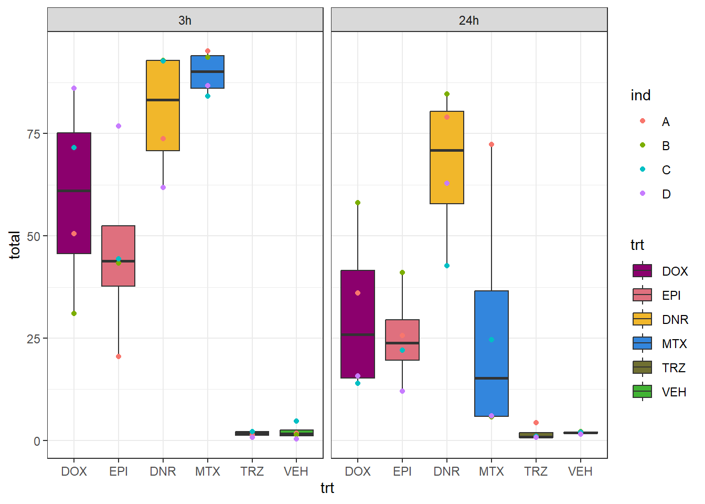

IF_H2A.X staining count
Renee Matthews
2025-07-16
Last updated: 2025-08-05
Checks: 7 0
Knit directory: ATAC_learning/
This reproducible R Markdown analysis was created with workflowr (version 1.7.1). The Checks tab describes the reproducibility checks that were applied when the results were created. The Past versions tab lists the development history.
Great! Since the R Markdown file has been committed to the Git repository, you know the exact version of the code that produced these results.
Great job! The global environment was empty. Objects defined in the global environment can affect the analysis in your R Markdown file in unknown ways. For reproduciblity it’s best to always run the code in an empty environment.
The command set.seed(20231016) was run prior to running
the code in the R Markdown file. Setting a seed ensures that any results
that rely on randomness, e.g. subsampling or permutations, are
reproducible.
Great job! Recording the operating system, R version, and package versions is critical for reproducibility.
Nice! There were no cached chunks for this analysis, so you can be confident that you successfully produced the results during this run.
Great job! Using relative paths to the files within your workflowr project makes it easier to run your code on other machines.
Great! You are using Git for version control. Tracking code development and connecting the code version to the results is critical for reproducibility.
The results in this page were generated with repository version 429a742. See the Past versions tab to see a history of the changes made to the R Markdown and HTML files.
Note that you need to be careful to ensure that all relevant files for
the analysis have been committed to Git prior to generating the results
(you can use wflow_publish or
wflow_git_commit). workflowr only checks the R Markdown
file, but you know if there are other scripts or data files that it
depends on. Below is the status of the Git repository when the results
were generated:
Ignored files:
Ignored: .RData
Ignored: .Rhistory
Ignored: .Rproj.user/
Ignored: analysis/H3K27ac_integration_noM.Rmd
Ignored: data/ACresp_SNP_table.csv
Ignored: data/ARR_SNP_table.csv
Ignored: data/All_merged_peaks.tsv
Ignored: data/CAD_gwas_dataframe.RDS
Ignored: data/CTX_SNP_table.csv
Ignored: data/Collapsed_expressed_NG_peak_table.csv
Ignored: data/DEG_toplist_sep_n45.RDS
Ignored: data/FRiP_first_run.txt
Ignored: data/Final_four_data/
Ignored: data/Frip_1_reads.csv
Ignored: data/Frip_2_reads.csv
Ignored: data/Frip_3_reads.csv
Ignored: data/Frip_4_reads.csv
Ignored: data/Frip_5_reads.csv
Ignored: data/Frip_6_reads.csv
Ignored: data/GO_KEGG_analysis/
Ignored: data/HF_SNP_table.csv
Ignored: data/Ind1_75DA24h_dedup_peaks.csv
Ignored: data/Ind1_TSS_peaks.RDS
Ignored: data/Ind1_firstfragment_files.txt
Ignored: data/Ind1_fragment_files.txt
Ignored: data/Ind1_peaks_list.RDS
Ignored: data/Ind1_summary.txt
Ignored: data/Ind2_TSS_peaks.RDS
Ignored: data/Ind2_fragment_files.txt
Ignored: data/Ind2_peaks_list.RDS
Ignored: data/Ind2_summary.txt
Ignored: data/Ind3_TSS_peaks.RDS
Ignored: data/Ind3_fragment_files.txt
Ignored: data/Ind3_peaks_list.RDS
Ignored: data/Ind3_summary.txt
Ignored: data/Ind4_79B24h_dedup_peaks.csv
Ignored: data/Ind4_TSS_peaks.RDS
Ignored: data/Ind4_V24h_fraglength.txt
Ignored: data/Ind4_fragment_files.txt
Ignored: data/Ind4_fragment_filesN.txt
Ignored: data/Ind4_peaks_list.RDS
Ignored: data/Ind4_summary.txt
Ignored: data/Ind5_TSS_peaks.RDS
Ignored: data/Ind5_fragment_files.txt
Ignored: data/Ind5_fragment_filesN.txt
Ignored: data/Ind5_peaks_list.RDS
Ignored: data/Ind5_summary.txt
Ignored: data/Ind6_TSS_peaks.RDS
Ignored: data/Ind6_fragment_files.txt
Ignored: data/Ind6_peaks_list.RDS
Ignored: data/Ind6_summary.txt
Ignored: data/Knowles_4.RDS
Ignored: data/Knowles_5.RDS
Ignored: data/Knowles_6.RDS
Ignored: data/LiSiLTDNRe_TE_df.RDS
Ignored: data/MI_gwas.RDS
Ignored: data/SNP_GWAS_PEAK_MRC_id
Ignored: data/SNP_GWAS_PEAK_MRC_id.csv
Ignored: data/SNP_gene_cat_list.tsv
Ignored: data/SNP_supp_schneider.RDS
Ignored: data/TE_info/
Ignored: data/TFmapnames.RDS
Ignored: data/all_TSSE_scores.RDS
Ignored: data/all_four_filtered_counts.txt
Ignored: data/aln_run1_results.txt
Ignored: data/anno_ind1_DA24h.RDS
Ignored: data/anno_ind4_V24h.RDS
Ignored: data/annotated_gwas_SNPS.csv
Ignored: data/background_n45_he_peaks.RDS
Ignored: data/cardiac_muscle_FRIP.csv
Ignored: data/cardiomyocyte_FRIP.csv
Ignored: data/col_ng_peak.csv
Ignored: data/cormotif_full_4_run.RDS
Ignored: data/cormotif_full_4_run_he.RDS
Ignored: data/cormotif_full_6_run.RDS
Ignored: data/cormotif_full_6_run_he.RDS
Ignored: data/cormotif_probability_45_list.csv
Ignored: data/cormotif_probability_45_list_he.csv
Ignored: data/cormotif_probability_all_6_list.csv
Ignored: data/cormotif_probability_all_6_list_he.csv
Ignored: data/datasave.RDS
Ignored: data/embryo_heart_FRIP.csv
Ignored: data/enhancer_list_ENCFF126UHK.bed
Ignored: data/enhancerdata/
Ignored: data/filt_Peaks_efit2.RDS
Ignored: data/filt_Peaks_efit2_bl.RDS
Ignored: data/filt_Peaks_efit2_n45.RDS
Ignored: data/first_Peaksummarycounts.csv
Ignored: data/first_run_frag_counts.txt
Ignored: data/full_bedfiles/
Ignored: data/gene_ref.csv
Ignored: data/gwas_1_dataframe.RDS
Ignored: data/gwas_2_dataframe.RDS
Ignored: data/gwas_3_dataframe.RDS
Ignored: data/gwas_4_dataframe.RDS
Ignored: data/gwas_5_dataframe.RDS
Ignored: data/high_conf_peak_counts.csv
Ignored: data/high_conf_peak_counts.txt
Ignored: data/high_conf_peaks_bl_counts.txt
Ignored: data/high_conf_peaks_counts.txt
Ignored: data/hits_files/
Ignored: data/hyper_files/
Ignored: data/hypo_files/
Ignored: data/ind1_DA24hpeaks.RDS
Ignored: data/ind1_TSSE.RDS
Ignored: data/ind2_TSSE.RDS
Ignored: data/ind3_TSSE.RDS
Ignored: data/ind4_TSSE.RDS
Ignored: data/ind4_V24hpeaks.RDS
Ignored: data/ind5_TSSE.RDS
Ignored: data/ind6_TSSE.RDS
Ignored: data/initial_complete_stats_run1.txt
Ignored: data/left_ventricle_FRIP.csv
Ignored: data/median_24_lfc.RDS
Ignored: data/median_3_lfc.RDS
Ignored: data/mergedPeads.gff
Ignored: data/mergedPeaks.gff
Ignored: data/motif_list_full
Ignored: data/motif_list_n45
Ignored: data/motif_list_n45.RDS
Ignored: data/multiqc_fastqc_run1.txt
Ignored: data/multiqc_fastqc_run2.txt
Ignored: data/multiqc_genestat_run1.txt
Ignored: data/multiqc_genestat_run2.txt
Ignored: data/my_hc_filt_counts.RDS
Ignored: data/my_hc_filt_counts_n45.RDS
Ignored: data/n45_bedfiles/
Ignored: data/n45_files
Ignored: data/other_papers/
Ignored: data/peakAnnoList_1.RDS
Ignored: data/peakAnnoList_2.RDS
Ignored: data/peakAnnoList_24_full.RDS
Ignored: data/peakAnnoList_24_n45.RDS
Ignored: data/peakAnnoList_3.RDS
Ignored: data/peakAnnoList_3_full.RDS
Ignored: data/peakAnnoList_3_n45.RDS
Ignored: data/peakAnnoList_4.RDS
Ignored: data/peakAnnoList_5.RDS
Ignored: data/peakAnnoList_6.RDS
Ignored: data/peakAnnoList_Eight.RDS
Ignored: data/peakAnnoList_full_motif.RDS
Ignored: data/peakAnnoList_n45_motif.RDS
Ignored: data/siglist_full.RDS
Ignored: data/siglist_n45.RDS
Ignored: data/summarized_peaks_dataframe.txt
Ignored: data/summary_peakIDandReHeat.csv
Ignored: data/test.list.RDS
Ignored: data/testnames.txt
Ignored: data/toplist_6.RDS
Ignored: data/toplist_full.RDS
Ignored: data/toplist_full_DAR_6.RDS
Ignored: data/toplist_n45.RDS
Ignored: data/trimmed_seq_length.csv
Ignored: data/unclassified_full_set_peaks.RDS
Ignored: data/unclassified_n45_set_peaks.RDS
Ignored: data/xstreme/
Untracked files:
Untracked: RNA_seq_integration.Rmd
Untracked: Rplot.pdf
Untracked: Sig_meta
Untracked: analysis/.gitignore
Untracked: analysis/Cormotif_analysis_testing diff.Rmd
Untracked: analysis/Diagnosis-tmm.Rmd
Untracked: analysis/Expressed_RNA_associations.Rmd
Untracked: analysis/IF_counts_20x.Rmd
Untracked: analysis/Jaspar_motif_DAR_paper.Rmd
Untracked: analysis/LFC_corr.Rmd
Untracked: analysis/SVA.Rmd
Untracked: analysis/Tan2020.Rmd
Untracked: analysis/making_master_peaks_list.Rmd
Untracked: analysis/my_hc_filt_counts.csv
Untracked: code/Concatenations_for_export.R
Untracked: code/IGV_snapshot_code.R
Untracked: code/LongDARlist.R
Untracked: code/just_for_Fun.R
Untracked: my_plot.pdf
Untracked: my_plot.png
Untracked: output/cormotif_probability_45_list.csv
Untracked: output/cormotif_probability_all_6_list.csv
Untracked: setup.RData
Unstaged changes:
Modified: ATAC_learning.Rproj
Modified: analysis/AC_shared_analysis.Rmd
Modified: analysis/AF_HF_SNPs.Rmd
Modified: analysis/Cardiotox_SNPs.Rmd
Modified: analysis/Cormotif_analysis.Rmd
Modified: analysis/DEG_analysis.Rmd
Modified: analysis/GO_analysis_DAR_paper.Rmd
Modified: analysis/H3K27ac_integration.Rmd
Modified: analysis/Jaspar_motif.Rmd
Modified: analysis/Jaspar_motif_ff.Rmd
Modified: analysis/SNP_TAD_peaks.Rmd
Modified: analysis/TE_analysis_norm.Rmd
Modified: analysis/final_four_analysis.Rmd
Note that any generated files, e.g. HTML, png, CSS, etc., are not included in this status report because it is ok for generated content to have uncommitted changes.
These are the previous versions of the repository in which changes were
made to the R Markdown (analysis/IF_counts.Rmd) and HTML
(docs/IF_counts.html) files. If you’ve configured a remote
Git repository (see ?wflow_git_remote), click on the
hyperlinks in the table below to view the files as they were in that
past version.
| File | Version | Author | Date | Message |
|---|---|---|---|---|
| Rmd | 429a742 | reneeisnowhere | 2025-08-05 | adding table making code |
| html | d32610f | reneeisnowhere | 2025-08-01 | Build site. |
| Rmd | f8c2002 | reneeisnowhere | 2025-08-01 | adding macros |
| html | c79f4be | reneeisnowhere | 2025-07-29 | Build site. |
| Rmd | cb0a956 | reneeisnowhere | 2025-07-29 | colors replot |
| html | a581f2f | reneeisnowhere | 2025-07-28 | Build site. |
| Rmd | 1a9a400 | reneeisnowhere | 2025-07-28 | first commit |
| Rmd | 6531274 | reneeisnowhere | 2025-07-22 | first commit |
library(tidyverse)Custom imageJ macros to identify cell nuclei and ROIs:
// === STEP 1: Open first .tif image from the folder ===
folder = "C:\\userfolders\\Images_EVOS\\If_cardiotox\\87-1 images\\C_DAPI\\";
saveRoiFolder = "C:\\userfolders\\Images_EVOS\\If_cardiotox\\87-1 images\\outline\\";
list = getFileList(folder);
for (i = 0; i < list.length; i++) {
if (endsWith(list[i], ".tif")) {
// Open image
open(folder + list[i]);
originalTitle = getTitle();
// === STEP 2: Duplicate and close original ===
baseName = replace(getTitle(), ".tif", ""); // removes .tif extension
newTitle = baseName; // or whatever matches your naming
run("Duplicate...", "title=" + newTitle);
dupTitle = getTitle(); // duplicated image becomes active
selectImage(originalTitle);
close();
// === STEP 3: Process duplicated image ===
selectImage(dupTitle);
run("8-bit");
setAutoThreshold("Otsu dark");
setOption("BlackBackground", true);
run("Convert to Mask");
run("Watershed");
// === STEP 4: Analyze particles ===
run("Analyze Particles...", "size=21-Infinity circularity=0.30-1.00 show=[Count Masks] display exclude summarize add");
// === STEP 5: Save ROIs ===
roiManager("Select", 0); // Avoid saving empty ROI manager
saveName = replace(dupTitle, ".tif", "") + ".zip";
roiManager("Save", saveRoiFolder + saveName);
// Cleanup (optional)
close();
maskTitle = "Count Masks of " + dupTitle;
if (isOpen(maskTitle)) {
selectImage(maskTitle);
close();
}
roiManager("Deselect");
roiManager("Reset");
// break; // Remove this line if you want to process all images in the folder
}
}Custom imageJ macros to use nuclei ROIs and detect any RED channel intesity for positive gammaH2AX staining
// === USER SETTINGS ===
roiFolder = "C:\\userfolders\\Images_EVOS\\If_cardiotox\\87-1 images\\outline\\";
txredFolder = "C:\\userfolders\\Images_EVOS\\If_cardiotox\\87-1 images\\C_TxRed\\";
outputFolder = "C:\\userfolders\\Images_EVOS\\If_cardiotox\\87-1 images\\DAPI_counts\\";
signalThreshold = 5; // define what counts as a "positive signal"
// === GET ROI FILES ===
roiFiles = getFileList(roiFolder);
// Before the loop, open/create summary file
masterFile = outputFolder + "Master_summary.csv";
// Write header (run once, before loop)
if (File.exists(masterFile)) File.delete(masterFile);
File.append("Sample,Total_ROIs,Positive_ROIs\n", masterFile);
// === LOOP OVER EACH ROI FILE ===
for (i = 0; i < roiFiles.length; i++) {
roiFile = roiFiles[i];
// Only process .zip ROI files
if (!endsWith(roiFile, ".zip")) continue;
// Remove suffixes more precisely
baseName = replace(roiFile, ".zip", ""); // e.g. "3h_87_DOX_B_DAPI_0004"
// === Build full filenames ===
roiPath = roiFolder + roiFile;
txredImage = replace(baseName, "_DAPI_", "_TxRed_") + ".tif";
txredPath = txredFolder + txredImage;
outputCSV = outputFolder + "Cell_intensity_" + baseName + ".csv";
// === Check if TxRed image exists ===
if (!File.exists(txredPath)) {
print("Skipping: TxRed image not found for", baseName);
continue;
}
// === Open image ===
open(txredPath);
imageTitle = getTitle();
// === Load ROI file ===
roiManager("Reset");
roiManager("Open", roiPath);
roiManager("Show None");
roiManager("Show All");
// === Prepare image for analysis ===
run("8-bit");
setAutoThreshold("Otsu dark");
getThreshold(lower, upper);
// Set a minimum acceptable threshold value (e.g., 25)
minThreshold = 10;
if (lower < minThreshold) {
lower = minThreshold;
}
// Apply threshold with adjusted floor
setThreshold(lower, 255);
run("Convert to Mask");
// === Measure signal in ROIs ===
run("Set Measurements...", "area mean min redirect=None decimal=3");
roiCount = roiManager("Count");
if (roiCount == 0) {
print("No ROIs in", roiFile);
close(); // Close image
continue;
}
roiIndexes = newArray(roiCount);
for (j = 0; j < roiCount; j++) {
roiIndexes[j] = j;
}
roiManager("Select", roiIndexes);
roiManager("Measure");
// === Count ROIs with mean > threshold ===
positiveCount = 0;
for (j = 0; j < roiCount; j++) {
value = getResult("Mean", j);
if (value > signalThreshold) {
positiveCount++;
}
}
// === Optional quality control: flag unexpectedly low or high counts
minPos = 25; // adjust to your expected lower limit
maxPos = 450; // adjust to your expected upper limit
if (positiveCount < minPos || positiveCount > maxPos) {
print("⚠️ WARNING: Sample", baseName, "has", positiveCount, "positive ROIs (expected between", minPos, "and", maxPos, ")");
// Display the image and ROIs for inspection
selectImage(imageTitle);
roiManager("Show All");
// Pause and allow manual threshold/ROI review
waitForUser("Inspect and adjust this sample manually if needed.\nWhen done, click OK to re-measure and continue.");
// Re-measure based on updated ROIs
run("Clear Results");
roiCount = roiManager("Count");
roiIndexes = newArray(roiCount);
for (j = 0; j < roiCount; j++) {
roiIndexes[j] = j;
}
roiManager("Select", roiIndexes);
roiManager("Measure");
// Re-count positives after manual fix
positiveCount = 0;
for (j = 0; j < roiCount; j++) {
value = getResult("Mean", j);
if (value > signalThreshold) {
positiveCount++;
}
}
print("✅ After manual adjustment:", positiveCount, "positive ROIs");
}
// === Save Results table ===
saveAs("Results", outputCSV);
// Inside your processing loop, after counting positives:
line = baseName + "," + roiCount + "," + positiveCount + "\n";
File.append(line, masterFile);
// === Optional: Print summary to log ===
print(baseName, ": ", positiveCount, "/", roiCount, " ROIs positive (>", signalThreshold, ")");
// === Cleanup ===
close(); // Close TxRed image
roiManager("Reset");
run("Clear Results");
}drug_pal <- c("#8B006D","#DF707E","#F1B72B", "#3386DD","#707031","#41B333")
Nuclei_gamma_count_87<- read_delim("data/Final_four_data/re_analysis/IF_data/Nuclei_gamma_count_87.txt",delim="\t")
Nuclei_gamma_count_77<- read_delim("data/Final_four_data/re_analysis/IF_data/Nuclei_gamma_count_77.txt",delim="\t")
Nuclei_gamma_count_71<- read_delim("data/Final_four_data/re_analysis/IF_data/Nuclei_gamma_count_71.txt",delim="\t")
Nuclei_gamma_count_75<- read_delim("data/Final_four_data/re_analysis/IF_data/Nuclei_gamma_count_75.txt",delim="\t")Ind_A_table <- Nuclei_gamma_count_87 %>%
dplyr::select(Sample,percentage) %>%
separate_wider_delim(Sample,delim = "_",names = c("time","ind","trt","focus"),too_many = "merge") %>%
group_by(trt,time) %>%
mutate(group_number = rep(c("A","B"), length.out = n())) %>%
mutate(trt=if_else(trt=="MTZ","MTX",trt)) %>%
ungroup() %>%
pivot_wider(., id_cols=c(time, ind,trt), names_from = group_number, values_from = percentage) %>%
rowwise() %>%
mutate(total = round(mean(c_across(c(A, B)), na.rm = TRUE), digits = 1)) %>%
ungroup() %>%
mutate(ind="A")
Ind_B_table <- Nuclei_gamma_count_77 %>%
dplyr::select(Sample,percentage) %>%
separate_wider_delim(Sample,delim = "_",names = c("time","ind","trt","focus"),too_many = "merge") %>%
group_by(trt,time) %>%
mutate(group_number = rep(c("A","B"), length.out = n())) %>%
mutate(trt=if_else(trt=="MTZ","MTX",trt)) %>%
ungroup() %>%
pivot_wider(., id_cols=c(time, ind,trt), names_from = group_number, values_from = percentage) %>%
rowwise() %>%
mutate(total = round(mean(c_across(c(A, B)), na.rm = TRUE), digits = 1)) %>%
ungroup() %>%
mutate(ind="B")
Ind_C_table <- Nuclei_gamma_count_71 %>%
dplyr::select(Sample,percentage) %>%
separate_wider_delim(Sample,delim = "_",names = c("time","ind","trt","focus"),too_many = "merge") %>%
group_by(trt,time) %>%
mutate(group_number = rep(c("A","B"), length.out = n())) %>%
mutate(trt=if_else(trt=="MTZ","MTX",trt)) %>%
ungroup() %>%
pivot_wider(., id_cols=c(time, ind,trt), names_from = group_number, values_from = percentage) %>%
rowwise() %>%
mutate(total = round(mean(c_across(c(A, B)), na.rm = TRUE), digits = 1)) %>%
ungroup() %>%
mutate(ind="C")
Ind_D_table <- Nuclei_gamma_count_75 %>%
dplyr::select(Sample,percentage) %>%
separate_wider_delim(Sample,delim = "_",names = c("time","ind","trt","focus"),too_many = "merge") %>%
group_by(trt,time) %>%
mutate(group_number = rep(c("A","B"), length.out = n())) %>%
mutate(trt=if_else(trt=="MTZ","MTX",trt)) %>%
ungroup() %>%
pivot_wider(., id_cols=c(time, ind,trt), names_from = group_number, values_from = percentage) %>%
rowwise() %>%
mutate(total = round(mean(c_across(c(A, B)), na.rm = TRUE), digits = 1)) %>%
ungroup() %>%
mutate(ind="D")bind_rows(Ind_A_table,Ind_B_table) %>%
bind_rows(., Ind_C_table) %>%
bind_rows(., Ind_D_table) %>%
mutate(time=factor(time, levels =c("3h","24h")),
trt=factor(trt, levels = c("DOX","EPI","DNR","MTX","TRZ","VEH"))) %>%
ggplot(.,aes(x=trt, y=total))+
geom_boxplot(aes(fill=trt))+
geom_point(aes(colour = ind))+
ggsignif:: geom_signif(comparisons = list(
c("VEH", "DOX"),
c("VEH", "EPI"),
c("VEH", "DNR"),
c("VEH", "MTX"),
c("VEH", "TRZ")),
step_increase = 0.1,
map_signif_level = FALSE,
test = "t.test")+
facet_wrap(~time)+
theme_bw()+
scale_fill_manual(values=drug_pal)
| Version | Author | Date |
|---|---|---|
| c79f4be | reneeisnowhere | 2025-07-29 |
bind_rows(Ind_A_table,Ind_B_table) %>%
bind_rows(., Ind_C_table) %>%
bind_rows(., Ind_D_table) %>%
mutate(time=factor(time, levels =c("3h","24h")),
trt=factor(trt, levels = c("DOX","EPI","DNR","MTX","TRZ","VEH"))) %>%
ggplot(.,aes(x=trt, y=total))+
geom_boxplot(aes(fill=trt))+
geom_point(aes(colour = ind))+
# ggsignif:: geom_signif(comparisons = list(
# c("VEH", "DOX"),
# c("VEH", "EPI"),
# c("VEH", "DNR"),
# c("VEH", "MTX"),
# c("VEH", "TRZ")),
# step_increase = 0.1,
# map_signif_level = FALSE,
# test = "t.test")+
facet_wrap(~time)+
theme_bw()+
scale_fill_manual(values=drug_pal)
| Version | Author | Date |
|---|---|---|
| c79f4be | reneeisnowhere | 2025-07-29 |
making table for future publishing
bind_rows(Ind_A_table,Ind_B_table) %>%
bind_rows(., Ind_C_table) %>%
bind_rows(., Ind_D_table) %>%
write_delim(., "data/Final_four_data/re_analysis/ATAC_excel_outputs/All_nuclei_gamma_counts.txt",delim="\t")
sessionInfo()R version 4.4.2 (2024-10-31 ucrt)
Platform: x86_64-w64-mingw32/x64
Running under: Windows 11 x64 (build 26100)
Matrix products: default
locale:
[1] LC_COLLATE=English_United States.utf8
[2] LC_CTYPE=English_United States.utf8
[3] LC_MONETARY=English_United States.utf8
[4] LC_NUMERIC=C
[5] LC_TIME=English_United States.utf8
time zone: America/Chicago
tzcode source: internal
attached base packages:
[1] stats graphics grDevices utils datasets methods base
other attached packages:
[1] lubridate_1.9.4 forcats_1.0.0 stringr_1.5.1 dplyr_1.1.4
[5] purrr_1.0.4 readr_2.1.5 tidyr_1.3.1 tibble_3.3.0
[9] ggplot2_3.5.2 tidyverse_2.0.0 workflowr_1.7.1
loaded via a namespace (and not attached):
[1] sass_0.4.10 generics_0.1.4 stringi_1.8.7 hms_1.1.3
[5] digest_0.6.37 magrittr_2.0.3 timechange_0.3.0 evaluate_1.0.4
[9] grid_4.4.2 RColorBrewer_1.1-3 fastmap_1.2.0 rprojroot_2.0.4
[13] jsonlite_2.0.0 processx_3.8.6 whisker_0.4.1 ps_1.9.1
[17] promises_1.3.3 httr_1.4.7 scales_1.4.0 jquerylib_0.1.4
[21] cli_3.6.5 crayon_1.5.3 rlang_1.1.6 bit64_4.6.0-1
[25] withr_3.0.2 cachem_1.1.0 yaml_2.3.10 parallel_4.4.2
[29] tools_4.4.2 tzdb_0.5.0 ggsignif_0.6.4 httpuv_1.6.16
[33] vctrs_0.6.5 R6_2.6.1 lifecycle_1.0.4 git2r_0.36.2
[37] bit_4.6.0 fs_1.6.6 vroom_1.6.5 pkgconfig_2.0.3
[41] callr_3.7.6 pillar_1.11.0 bslib_0.9.0 later_1.4.2
[45] gtable_0.3.6 glue_1.8.0 Rcpp_1.1.0 xfun_0.52
[49] tidyselect_1.2.1 rstudioapi_0.17.1 knitr_1.50 dichromat_2.0-0.1
[53] farver_2.1.2 htmltools_0.5.8.1 labeling_0.4.3 rmarkdown_2.29
[57] compiler_4.4.2 getPass_0.2-4